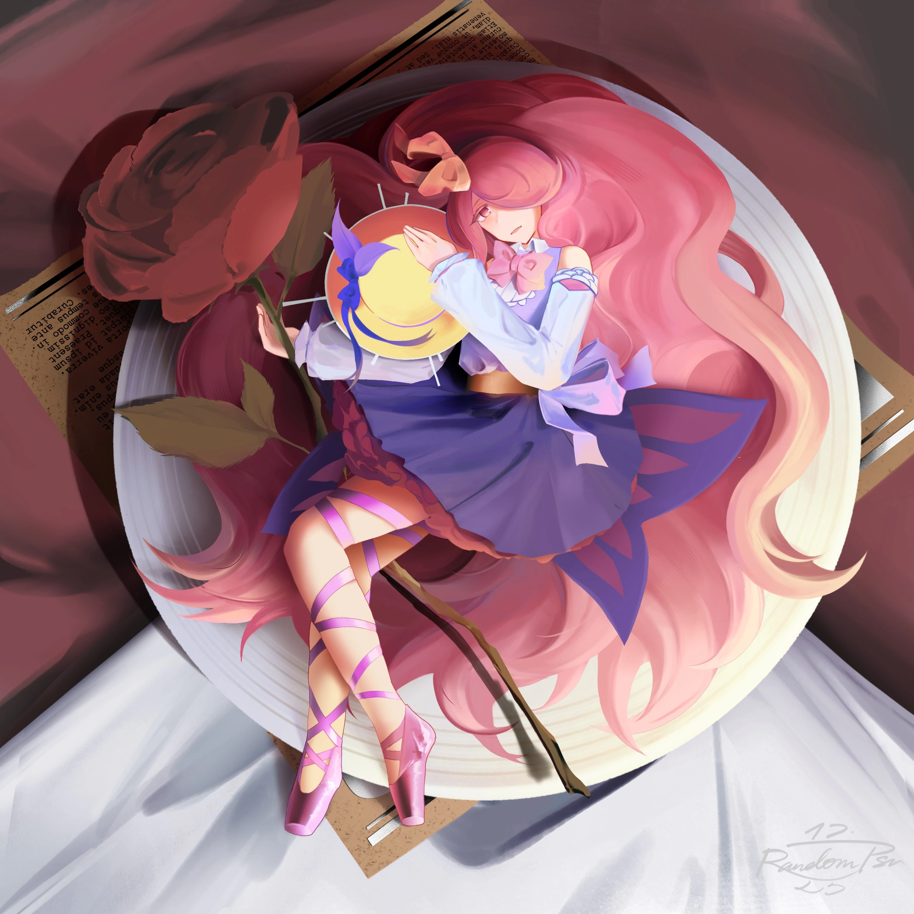
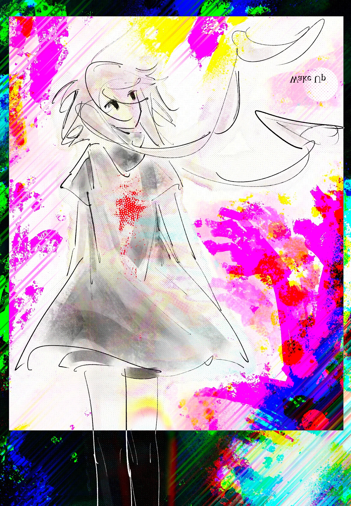
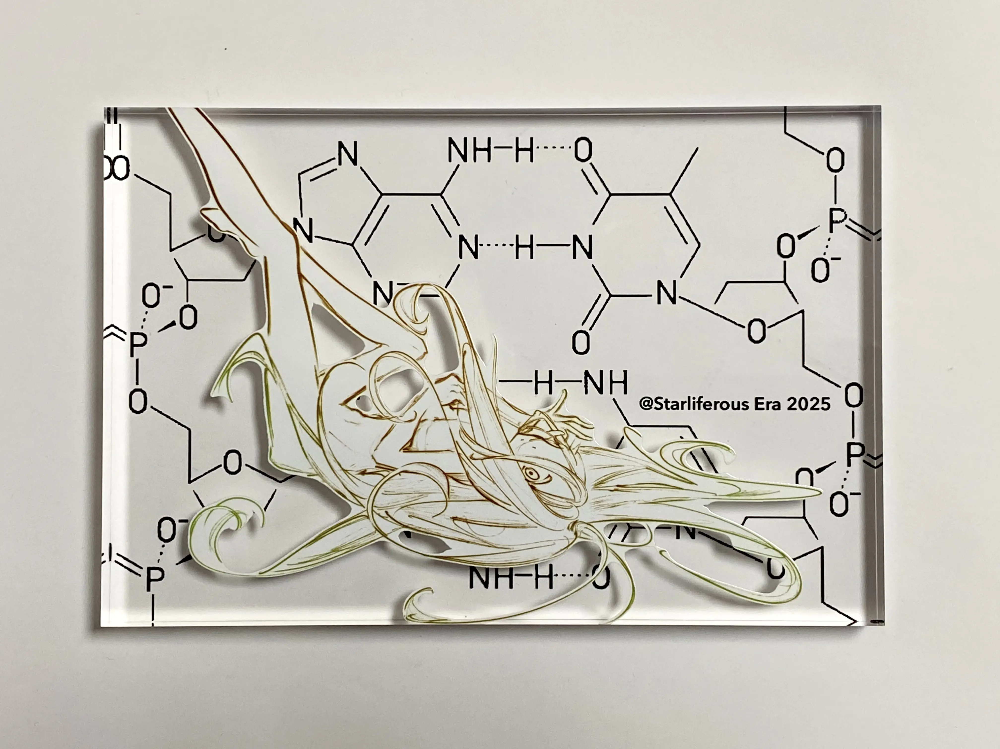
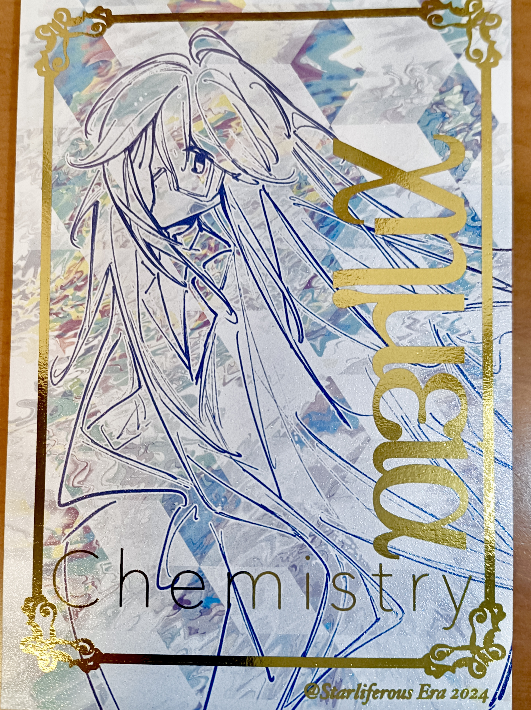
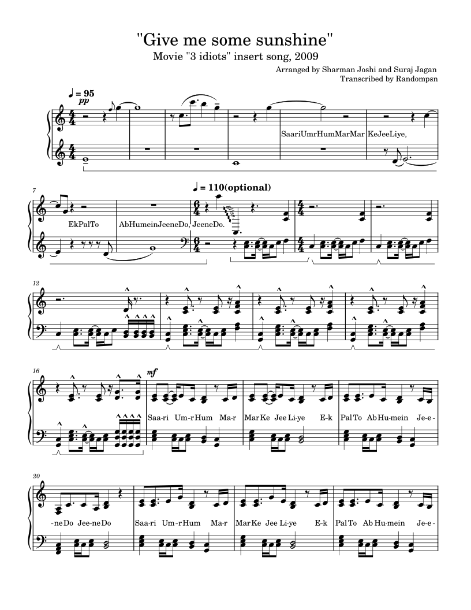

Works
Welcome to the most colorful page of the website.
Upcoming...
Academics
Study records. I don't like conciously making records by nature but it's necessary. I like documenting old stuff too.
Knzhou Handouts
Knzhou...Knzhou...knzhou...pdf preview of 1st writeup
MITOCW
18.02
I've learned through 18.02 in 24 Winter, in which I watched all the video lectures without doing assignments and tested myself with practice exam 4A. In 26 summer, I started tutoring my boyfriend AA vector calculus with the 18.02 lecture notes and problem sets in order to prepare him for the upcoming course in G12. We're at lagrange multipliers now at Sep 2nd. (I also tutored him Calculus BC earlier in the year. He only took statistics in school and got 5's for both.)
freeCodeCamp
TBD
AOGuide
TBD
All things middle school
Year-long study group in G9
Layer seperating
Drawings
I use Procreate + iPad Air 4 + Apple Pencil, though I also know the basics of PS and Adobe Illustrator from a semester of design class.
Also check out my lofter account for more drawings! Uh, it's quite embarassing though, mostly subject anthropomorphia.

2025.12.25
2025.11.06

2025.05.26

2025.01.03

150mm*100mm golden hotstamp postcard
Customized at taobao.com 图狗印刷(seller). The seller is flawless: they have the best price (2rmb/card for 10cards), the smallest minimum order quantity (10), and a caring customer service. I was charged double this price since my hotstamp area is a lot larger, and it was still ~2x cheaper than other sellers.
2024.12.27
Live2d
Live2d is something I consider as a secret skillset! I've been into live2d animation ever since G7. It'll take some time to properly record videos of the models so I'll throw my college application videos in (for now)! I've put all of these inside my maker portfolio and guess what I'm so running out of total video time :winks:
Hishi Amazon Desktop Pet
This is a Live2dViewerEX desktop pet I made for a friend whose favorite character in Umamusume is Hishi Amazon!
Model for my OC
SHE IS MY DAUGHTHER (and I'm 100% sorry if I've awakened your GachaClub PTSD lmao, but speaking of that, back in 2020 me and my peers are in age 11 :skull:)
……and bonus points if you realized that's her in the first drawing.
Engineering
Electric engineering
TBD
Heart-shaped light
TBD
Archive
Randompsn as an UTAU singer
The topmost video is sang with Randompsn UTAU! ('s D4. This part doesn't contain notes lower than A3 so don't be shocked when you hear the full version...)
probably the best beginner's tutorial for making a UTAU voicebank
Ok first of all my Japanese pronounciation needs more practice, second I can't afford a good microphone considering the project size lmao.
Tips: 1. Record in OREMO but don't oto in it. VLabeler is better in every usecase I can think of. 2. Check for tone consistency, checkfortoneconsistency. (My case is a bit wierd though, since my voice sounds very different in low pitch and high pitch. They always call me a shota when I speak in Goose Goose Duck and I'm speechless. Lol.)
A lot of layer-seperating commissions
Layer-seperating is the process of turning picture(s) into animation-ready layers. I usually do them for live2d animations.
"Give me some sunshine" solo-piano trascribing
I love this song!!! I was trying to find a decent sheet but couldn't so I downloaded musescore and spent around 5 days straight on this. View it on musescore and download it at dropbox!

By the way, per the fact that everything you can see on your browser are supposed to be sent to the browser, you can download all the svg files on musescore for free via developer tools.
Manga for my (now ex)gf's OC
Despite everything, I did work hard on this. This is my first time drawing a manga and I'm sort of satisfied by the outcome. 24p in total, here's page 16-17 as a preview.